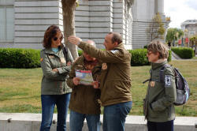

Constituent analysis
 |
I spotted the man with a telescope |
This guide concerns how we unravel what is meant by that
sentence.
We cannot be sure whether this means:
I used a telescope to spot the man
or
I spotted the man who had a telescope
If you have not yet followed the guide to phrases on this site, now's a good time to do that (new tab). If, however, you are comfortable with identifying Noun phrases, Adverb phrases, Verb phrases and Prepositional phrases, read on.
 |
What makes a constituent? |
The issue here is often one of ambiguity. Take, for example, an apparently simple sentence such as:
 |
The teacher shouted at the boy in room 13 |
 |
Task: A moment's thought will reveal that there are two possible ways to understand this sentence. Click here when you have figured out what they are. |
- The teacher shouted at the boy who came from, is or is
normally in room 13
(i.e. in room 13 tells us about the boy)
OR - The place where the teacher shouted at the boy is room
13
(i.e. in room 13 tells where the shouting happened)
We can only understand which interpretation is the correct one by identifying the constituent parts of each clause, like this:
Interpretation 1: the object of the shouting is the boy in room 13
| Constituent 1 | Constituent 2 | Constituent 3 |
| The teacher | shouted at | the boy in room 13 |
| noun phrase | verb phrase | modified noun phrase |
Interpretation 2: the shouting happened in room 13
| Constituent 1 | Constituent 2 | Constituent 3 | Constituent 4 |
| The teacher | shouted at | the boy | in room 13 |
| noun phrase | verb phrase | noun phrase | prepositional phrase |
The trick is to decide, in this case, whether the prepositional phrase, in room 13, is a constituent in its own right, in which case Interpretation 2 applies, or whether it forms a part of the constituent noun phrase, the boy in room 13, in which case Interpretation 1 applies.
If you prefer a diagram, it looks like this. The subject
noun phrase is in green, the verb phrase and accompanying adverbial in blue and the object noun
phrase in red. The question to answer is
Does the prepositional phrase tell us about the verb (in
which case it is an independent constituent) or does it modify the
noun (in which case it forms part of the constituent noun phrase)?
If you yearn for a neat technical term for this kind of phenomenon, it's called syntactic ambiguity.
|  | Levels of ambiguity |
There are many times, of course, when no, or very little,
ambiguity exists and in these cases we can normally rely on our
intuition to decide what qualifies as an independent constituent.
For many learners, intuition alone is not always enough so
we need to be clear in our presentation.
At other times, various levels of ambiguity exist.
For example:
- John upset the lady in the red dress
Here, it seems reasonable to suppose that the constituent (in this case the object noun phrase, the lady in the red dress) cannot be broken into two elements or we end up with the unlikely, but just possible:
In the red dress, John upset the lady
which means that John was wearing the red dress. That is not a conclusion to which people would naturally come on hearing / reading the sentence with no other context so the level of ambiguity is quite low. The reason for this is purely semantic: the fact that, generally speaking, it is unusual for people called John to wear dresses.
However, the level of ambiguity is higher when semantic issues are stripped out and we consider:
John upset the lady in the garden
in which we truly do not know, without context to help, whether the lady whom John upset is identified as being the one in the garden or whether the place in which John upset her was the garden. - He cut down the tree in the corner
Here, too, the noun phrase, the tree in the corner, logically forms a single constituent but a small change can introduce a degree of ambiguity as in:
He cut up the tree in the corner
in which we cannot be sure whether it was the tree in the corner that he cut up or the place where he cut up the tree was in the corner. - She promised to talk to the boss today
When verbs come in pairs like this (i.e., they are catenative) some ambiguity concerning the direction of the adverbial is created. This sentence could mean:
Today, she promised to talk to the boss
or
At some other time, she promised to talk to the boss today
so, we need to disentangle whether the adverbial is modifying promise or to talk. - He read his book on the train
Here, we intuitively identify four constituents:
He (the subject noun phrase)
read (the verb phrase)
his book (object noun phrase)
and
on the train (prepositional phrase)
so it is logical to form, e.g.:
On the train, he read his book
Again, however, a small change can produce some ambiguity as to what we understand as the constituents, as in, e.g.:
He read his book on the philosopher
where our intuition is not that he rested his book on a philosopher but that his book on the philosopher forms a single constituent noun phrase telling us what the book was about, rather than where he read it.
It is wholly impossible, without context, to decide if
He read his book on the island
means the island was where he read the book or the subject of the book was the island. - They provided more accurate figures
You may have understood this to mean one of two possibilities:
The figures they provided were more accurate than the existing ones
or
The figures they provided were accurate and additional to the accurate ones already existing
In spoken language, there would be a very slight pause after more (which would also be stressed) to signify the second meaning. The first meaning would be signified by no pausing and the stress falling on accurate rather than more.
The issue here is whether more is an adverb modifying the adjective accurate (the first meaning) or whether it is a determiner relating to the noun phrase accurate figures (the second meaning). The key to unravelling it, which cannot be done from the written form, is to see whether the object is figures (the first meaning) or accurate figures (the second meaning). - From CNN news:
We are now actively investigating the Trump Organization in a criminal capacity, along with the Manhattan DA," ... Fabien Levy told CNN.
which has two prepositional phrases:
in a criminal capacity
and
along with the Manhattan DA
and it takes the reader a moment to figure out that the sentences should be:
We, along with the Manhattan DA, are now actively investigating the Trump Organization in a criminal capacity
or it reads as if the Manhattan DA is being investigated rather than being part of the investigating team.
(https://edition.cnn.com/2021/05/18/politics/new-york-attorney-general-trump-organization-criminal-probe/index.html, [accessed 21 May 2021])
It is not only noun and prepositional phrases which need to be disambiguated.
The same phenomenon of trying to decide what belongs where can occur
with verb phrases: For example, the sentence:
The people who came quickly got lunch
has two interpretations:
- The verb phrase is came, with the modifying
adjunct, quickly, in which case we
have:
- The verb phrase is got, pre-modified by the
adverbial, quickly, in which case we
have:
The only way that can properly be disambiguated is by pausing in
speech after quickly (and signalling sense 1.) or after
came (and signalling sense 2.).
In writing, only rephrasing the sentences will completely remove
the ambiguity although inserting commas (after quickly and
came respectively) may help. Moving the adverb
settles the matter but for many, quickly came sounds
clumsy. We might rephrase, then, as:
- The people who were quick to arrive got lunch
- The people who came got lunch quickly.
As you can see, the situation is not at all obvious so we need to have some tests to determine which phrases in a clause actually form independent constituents.
 |
Testing for constituents |
There are a number of tests we can apply to see if our intuitions
about what is really an independent constituent and what is a phrase
forming part of a constituent are correct.
Authorities vary on how many of
these tests there are and whether they are all valid but we will
content ourselves with six well known ones and a seventh which is
based on grammatical analysis.
 |
Test 1: joining another constituent (the coordination test) |
Depending on the function of the phrase, we have to use a different sort of language if we want to add to the phrase in question. For our example:
- The teacher shouted at the boy in room 13 and all his friends (this follows interpretation 1)
- The teacher shouted at the boy in room 13 and in the corridor (this follows interpretation 2)
In the first case, we have to add another noun phrase (all his friends) to perform the same function and in the second case we have to add another prepositional phrase (in the corridor) to perform the same function.
We can do this, too, with some of the examples above and extend a
sentence such as:
He read his book on the island
to
He read his book on the island
and its people
where it becomes obvious that the subject of the book is in
question, not where he read it so the object noun phrase is his
book on the island and its people.
Extending other constituents is also revealing, so
He read his book on the island
and on the way home
makes it clear where the reading took place so on the island
can only be interpreted as a prepositional phrase which is a
constituent in its own right.
It is also possible to have:
He cut up the tree in the corner
and the old
shed
so we know that what he cut up was the tree in the corner and
the old shed
and that in the corner does not refer necessarily to where the
cutting took place. But,
He cut up the tree in the corner
near the garage
makes it clearer that we are talking about position.
However, this test will not work with one of the examples above
because:
They provided more accurate figures
can be extended as
They provided more accurate figures
and lots
of other information
but we still do not know whether more is an adverb
modifying accurate or a determiner relating to accurate
figures.
Test 2: making a passive |
When we make a passive, we keep constituents together. For our main example, two passive sentences are possible and they reveal which interpretation is the right one:
- The boy in room 13 was shouted at (by the teacher) (interpretation 1)
- The boy was shouted at (by the teacher) in room 13 (interpretation 2)
Again, we can apply this test to the sentences we used above and
disambiguate the meaning by converting:
He read his book on the island
to
His book on the island was read
which refers to the subject of the book, or
His book was read
on the island
which refers to where it was read.
It is also possible to convert:
He cut up the tree in the corner
to
The tree in the corner
was cut up
and
The tree was cut up
in the corner
so we know that what he cut up was the tree in the corner
in the first and where it was cut up in the second.
However, again, this test will not work with one of the examples
above, because, although:
They provided more accurate figures
can be rendered as
More accurate figures were provided (by
them)
we still do not know whether more is an adverb
modifying accurate or a determiner relating to accurate
figures.
 |
Test 3: making a cleft |
There are a number of ways to make a cleft sentence (there's a guide on this site, linked below in the list of related guides at the end) but one example will do to show how the results differ depending on the nature of the phrase. This is called an it-cleft, incidentally.
- It was the boy in room 13 that was shouted at by the teacher (interpretation 1)
- It was in room 13 that the boy was shouted at by the teacher (interpretation 2)
This will also work as a test for some of the other examples so,
for example:
He cut up the tree in the corner
can be rendered as:
It was the tree in the corner
that he cut up
or
It was in the corner that he cut up
the tree
and in the first case we know the object noun phrase is the tree
in the corner but in the second it is simply the tree
and in the corner refers to where the cutting took place.
We can also render
He read his book on the island
as
It was on the island that he read
his book
and as
It was his book on the island that he read
which succeeds in disambiguating the sentence.
Other wh-cleft forms can be used so we can also
disambiguate with, e.g.:
Where he read his book was on the island
What he read on the island was his book
Where he cut up the tree was in the corner
What he cut up was the tree in the corner
Making a cleft also disentangles the ambiguity caused by
catenating verbs and our example above:
She promised to talk to the boss today
can be clarified by making either:
It was today that she promised to talk to the
boss
or
What she promised today was to talk to the
boss
Unfortunately, this test will also not work again with:
They provided more accurate figures
because
It was more accurate figures that they
provided
can have exactly the same dual meaning.
 |
Test 4: questions |
We can, of course, form questions from our first example sentence but, depending on the nature of the constituents, the questions and answers will differ:
- Who was shouted at by the teacher? → The boy in room 13 (interpretation 1)
- Where was the boy shouted at by the teacher? → In room 13 (interpretation 2)
This test will work to disambiguate:
He read his book on the island
because the two questions are
What did he read? → His book on
the island
Where did he read his book? → On the
island
And
He cut up the tree in the corner
also generates two questions:
What did he cut up? → The tree in
the corner
Where did he cut it up? → In the
corner
This test will not necessarily disambiguate issues caused by
catenative verbs so from:
She promised to talk to the boss today
we can make two questions
When did she promise to talk to the boss?
or
What did she promise?
and both arrive at the same answer with the ambiguity still present
because the wh-question word can apply to either verb.
This is the first test that will partially disambiguate:
They provided more accurate figures
because there are two possible questions:
What did they provide? → More
accurate figures
What sort of figures did they provide? → More
accurate ones
but we still do not know in the first answer whether more is an adverb
modifying accurate or a determiner relating to accurate
figures so disambiguation is not fool proof.
Test 5: pro forms |
Pro-forms include many pronouns but the one we select will depend on how we have understood the constituent parts of the sentence. We can have, therefore:
- The teacher shouted at him (interpretation 1)
- The teacher shouted at the boy there (interpretation 2)
This will also work as a test for some of the other examples so,
for example:
He cut up the tree in the corner
can be rendered as:
He cut it up in the corner
or
He cut the tree up there
and in the first case we know the object noun phrase is it
(the tree in the corner) but in the second it is
simply the tree and there refers to where the
cutting took place.
We can also render
He read his book on the island
as
He read his book there
and as
He read it on the island
which succeeds in disambiguating the sentence.
Fortunately, this test will also work with:
They provided more accurate figures
because, although
They provided them
can have exactly the same dual meaning,
They provided more
and
They provided more accurate ones
does partially disambiguate because in the first more is
obviously a pronoun. This is only partially disambiguated,
however, because we still do not know the grammatical role of
more in the last example.
 |
Test 6: fronting |
Certain types of phrases allow fronting (i.e., moving to the start of the sentence). We can have, therefore:
- The boy in room 13 (whom) the teacher shouted at (interpretation 1)
- In room 13, the teacher shouted at the boy (interpretation 2)
We can apply this test to the sentences we used above and
disambiguate:
He read his book on the island
by moving the prepositional phrase:
On the island he read his book
which can only refer to where it was read.
It is also possible to have:
In the corner he cut the tree up
so we know that what he cut up was the tree
and the prepositional phrase provides the location.
However, again, this test will not work with:
They provided more accurate figures
because we cannot move any constituent to the front unless we make a
cleft or a passive (see above) which do not disambiguate, as we saw.
|
|
Test 7: Grammatical gradience |
A problem we have identified so far lies with the example of
They provided more accurate figures
which is ambiguous because of the indeterminate function of the word
more:
- If it is an adverb, then it is modifying the adjective accurate and the sentence refers to the figures being more accurate than the existing ones.
- If it is a determiner, then it must be modifying the phrase accurate figures and the sentence means that they provided additional, equally accurate, figures.
We have also seen that none of the tests we apply wholly successfully
disambiguates the sentence.
We can, however, apply a special test in this case and recognise
that the word more itself is the root of the problem, not
the constituents of the phrase in which it resides, because it slips
between word-class categories (in this case, adverb to determiner
but we also saw that it can be a pronoun). The indeterminate
nature of some words regarding their word class is an example of
gradience.
The simple way is to use an alternative and render the sentence as
They provided additional accurate figures
which can only be interpreted as their providing accurate figures in
addition to the existing accurate ones.
By the same token, we can rephrase the sentence using the adjective
predicatively as:
The figures they provided were more accurate
which can only mean that
more is being used as an adverb to
modify the adjective and that the existing figures were less
accurate.
We can also note that we can substitute the determiner
more
in a predicative form as:
The (accurate) figures they provided were
additional
The word less suffers from the same categorical
indeterminacy so
I want less expensive work done
can be interpreted as:
I want less work which is expensive done
or
I want cheaper work done
Rephrasing is the only option available successfully to disambiguate
the sense. That can be achieved by the use of a relative
pronoun clause, like this:
They provided figures that were more accurate
or
I want work which is less expensive done
or
I want less work which is expensive done
Limitations and problems |
Limitations
Not all of the first six tests can always be applied because English
resists certain types of structure. For example, using who
in cleft sentences is not normally allowed (*Who the teacher
shouted at was the boy in room 13).
However, if we can apply two or more of these tests and come
up with grammatically acceptable forms, then we have, almost
certainly, successfully identified the real constituent phrases.
Problems
Constituent analysis works very neatly when the constituents know their places and keep to them. For our main example sentence, we can draw two tree diagrams to show the interpretations we can put on the clause. Like this:
On the left, you'll note, the Object noun phrase is a single
constituent and on the right, it is made up of two independent
constituents. So, Interpretation 1 is that the object of the
verb is the boy in room 13 and Interpretation 2 is that the
object of the verb is the boy with additional adverbial
information concerning where the event took place.
We can refine the analysis by going down a step and analysing the
Verb phrase as Verb + Past marker + Prepositional particle and analysing the
object noun phrases more carefully as Determiner + Noun etc. but for
our purposes here, we won't.
Unfortunately, constituents don't always know their places and move
around as discrete units. Take for example:
- Did the teacher shout at the boy in room 13?
- The teacher woke the boy in room 13 up
- The teacher woke the boy up in room 13
In these case, the verb phrases have become separated by the noun phrases and the tree diagrams now look very messy if we try to draw them so we are reduced to having something like:

because traditional branching tree diagrams just won't work.
For more concerning this and other objections to constituent analysis, see the guide to Chomsky and transformational functional grammar, linked below.
 |
Rhythm |
In spoken English, constituents can often be identified by the
fact that speakers tend, unless they are speaking very quickly, to
insert a slight pause between phrases they perceive as constituents
and to create a nuclear stress on each sense or tone unit.
We can compare our two original interpretations of The teacher
shouted at the boy in room 13 and split the clause in two
possible ways:
- || The teacher |
shouted at | the boy in
room 13 ||
and - || The teacher | shouted at | the boy | in room 13 ||
In a., a speaker will tend to keep the rhythm of the sentence
intact with the voice tone falling towards the end.
In this case, the sentence forms a single tone unit with the nucleus
on boy and an unstressed tail, in room
13.
In b., by contrast, most speakers will insert a very slight pause
between the boy and in room 13 and add an
additional stress on 13.
In this case there are two tone units, the first with a nucleus on
boy and the second with a nucleus on
13.
This is by no means easy for learners to hear without a good deal of
practice (and is not consistent across all speakers) but it can be
illustrated with something like:
| a. | |
| b. |
 |
In the case of b., there is a stress on 13 but that is
absent in case a.
For more, see the
guide to sentence stress, linked below.
 |
Teaching implications |
The first thing to note is that languages will have different
ways of ordering the constituents of sentences and will even have
different tests for identifying constituents so it's not the case
that learners can simply transfer their intuitions from their first
languages to English. That's one reason we get errors such as:
*In the room with energy worked the people
*The working in the factory people
*I like reading and play tennis
*He looked the children after
The ability to recognise what is and is not a constituent phrase allows learners to develop a sense for what can qualify as the subjects, verbs and objects in sentences and set up mental templates for how acceptable sentences are constructed. This may help them avoid, e.g.:
- In the corner the person is
staring at me (instead of The person in the corner is
staring at me)
This kind of error can be shown up by applying almost any of the tests above and avoiding producing, e.g.- *It's in the corner that the person is staring at me
noting that
It's the person in the corner who is staring at me
is the correct interpretation - *I'm being stared at in the corner by the person
noting that
I'm being stared at by the person in the corner
is meaningful - Where is the person staring at me?
noting that
Who is staring at me?
is the correct question form
- *It's in the corner that the person is staring at me
- I don't know her who is wearing the
red dress which can be avoided by looking at the natural
pro-form:
- I don't know her
or the full form of three constituents (subject pronoun, verb phrase, object noun phrase) - I don't know the woman who is wearing the red dress
- I don't know her
Perversely (to some), one simple way of doing this and getting
your learners to recognise what the constituents of a clause
actually are is to use precisely the sorts of messy diagrams we saw
above. For example, using:
can alert people visually to the fact that the verb-phrase
constituent comes in two parts and the object noun-phrase
constituent is not just the boy but the boy in room 13.
Contrasting that diagram with:
can alert people to the fact that now the prepositional phrase is an
independent constituent which has a separate meaning and can be
moved around to give
In room 13, the teacher woke the boy up.
The obvious follow-up exercise is to get your learners to draw their
own block diagrams to show which bits of the clause do what.
How complex and interesting these are is dependent on the level of
the learners, of course, but a few suitable candidates are:
- He waited on the platform near the entrance for the train
for London
in which the issue is whether there are two constituent prepositional phrases or whether the platform near the entrance is a constituent noun phrase in itself. Compare:
On the platform near the entrance, he waited for the train to London
with
On the platform, he waited near the entrance for the train to London
with
On the platform, he waited for the train to London near the entrance - She hit the man with a gun
vs.
She shot the man with a gun
vs.
She stabbed the man with a gun
in which the obvious issue is whether the man with a gun is the constituent noun phrase or whether with a gun is a prepositional phrase telling us about the instrument she used. - They left the money on the table
subject + verb + object + prepositional phrase or subject + verb + object noun phrase?
To check the concept, ask:
Did they put the money on the table?
Did they take the money?
Did they have the money when they arrived?
The sentence stress and intonation issue mentioned above is probably not something
with which you will wish to trouble learners at lower levels but
with more advanced learners, the ability to hear the slight pause
gives valuable information concerning the speaker's understanding of
what is and is not a constituent of the clause.
For more, see the
guide to sentence stress.
The final important issue is that doing a little constituent analysis on the target language we have in mind to teach will often pay dividends and prevent us from falling into some obvious traps and actually inducing errors.
| Related guides | |
| ambiguity | this is a general guide which includes but is not limited to clause constituents |
| cleft sentences | explaining how we get from, e.g., She liked the hotel to What she liked was the hotel |
| sentence stress | for more on how constituents are stressed and tone units |
| phrases | for a general guide to phrase structures |
| intonation | this guide considers how intonation may be used to disambiguate the constituents of clauses |
| gradience | for a guide to the issues posed by more and less above concerning categorical indeterminacy |
| Chomsky | for some consideration of objections to this kind of analysis |